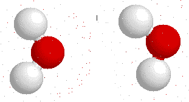
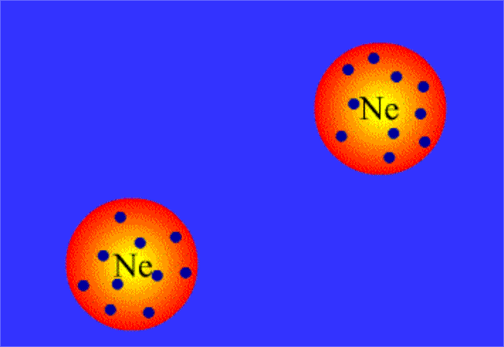
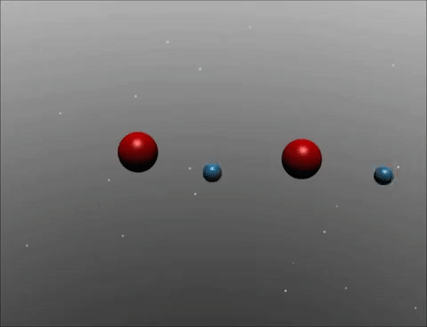
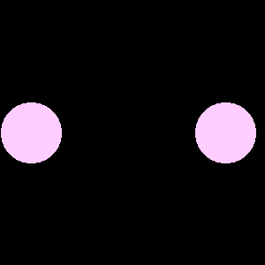

<div class="container">
  <div class="row" style="margin-top: 20%;">
    <div class="col-md-4 col-xs-2"></div>
    <a id="ddi" class="btn btn-info col-md-4 col-xs-8 btn-lg"><h4>
    Intermolecular Forces Attraction</h4></a>
  </div>
<!--   <div class="row">
    <div class="col-md-4 col-xs-2"></div>
    <a id="ldf" class="btn btn-info col-md-4 col-xs-8 btn-lg"><h4>
    London dispersion Forces</h4></a>
  </div> -->
  <div class="row">
    <div class="col-md-4 col-xs-2"></div>
    <a id="hb" class="btn btn-info col-md-4 col-xs-8 btn-lg"><h4>
    Hydrogen Bonding</h4></a>
  </div>
<!--   <div class="row">
    <div class="col-md-4 col-xs-2"></div>
    <a id="idi" class="btn btn-info col-md-4 col-xs-8 btn-lg"><h4>
    Ion-dipole interaction</h4></a>
  </div> -->
</div>


<script type="text/javascript">
  top_button.click(function(){
    location.reload();
  });
  $("#ddi").click(function(){
    open_modal("#ddi",`<div class="embed-responsive embed-responsive-16by9">
              <iframe class="embed-responsive-item" src="https://lab.concord.org/embeddable.html#interactives/sam/intermolecular-attractions/2-comparing-dipole-dipole-to-london-dispersion.json" allowfullscreen height=50></iframe>
            </div>`);
    // open_modal("#ddi",``);
  });
  $("#ldf").click(function(){
    open_modal("#ldf",`<div class="embed-responsive embed-responsive-16by9">
              <iframe class="embed-responsive-item" src="https://lab.concord.org/embeddable.html#interactives/sam/intermolecular-attractions/5-strengthening-london-dispersion-attraction.json" allowfullscreen height=50></iframe>
            </div>`);
    // open_modal("#ldf",``);
  });
  $("#hb").click(function(){
    open_modal("#hb",`<div class="embed-responsive embed-responsive-16by9">
              <iframe class="embed-responsive-item" src="https://phet.colorado.edu/sims/html/states-of-matter/latest/states-of-matter_en.html?fbclid=IwAR23yq3_3qYLx4KO24LihQTe60wzlDJsvwjY4ePMB8-6N3RZZyfBCfv-SYs" allowfullscreen height=50></iframe>
            </div>`);
    // open_modal("#hb",``);
  });
  $("#idi").click(function(){
    open_modal("#idi",``);
  });
</script>